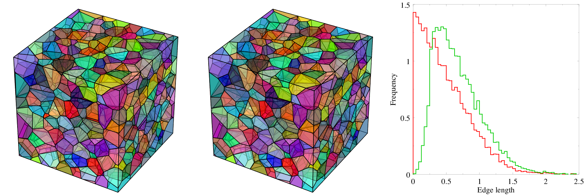

Generation¶
Module -T generates polycrystals as tessellations. The primary capabilities are: (i) the generation of tessellations from cell properties (e.g. a size distribution) and (ii) the definition of cell groups (to represent different material phases) and (iii) the generation of multiscale tessellations (i.e. including cell subdivisions). These capabilities can also be used together. Tessellations are Laguerre (or Voronoi) tessellations and are therefore composed of convex cells. Finally, the tessellations can be “regularized” by removing their smallest features (edges and faces), which enables good-quality meshing with module -M. Periodicity conditions can be prescribed. Crystal orientations are provided for the grains. The output is a tessellation file written at a scalar (vectorial) or raster format.
Generalities¶
Tessellations are built in a bounded domain of space. A cubic domain is used by default, but cylindrical domains and spherical domains are also available while arbitrary convex domains can be defined, as illustrated below. Tessellations can contain an arbitrary number of cells and can be generated in 3D or in 2D. All capabilities available in 3D also are available in 2D. Crystal orientations are assigned to the cells. Below is the generation of 200-cell Poisson-Voronoi tessellations of various 3D domains:
$ neper -T -n 1000
$ neper -T -n 1000 -domain "cylinder(1,100)"
$ neper -T -n 1000 -domain "sphere(1,1000)"

Tessellations from morphological properties¶
Tessellations can be of different types, depending on the ways the seeds are defined. Poisson-Voronoi tessellations are obtained when the seed positions are randomly chosen from a uniform distribution. Hardcore Voronoi tessellations are obtained when a non-zero repulsion distance is set between the seeds. Centroidal Voronoi tessellations are such that the cell seeds and centroids coincide, which can be ensured by an iterative procedure. Finally, Laguerre Voronoi tessellations can be obtained when a non-zero weight is assigned to each seed, as illustrated below. Such a collection of algorithms enables to generate a wide variety of microstructures.
$ neper -T -n 1000 -morpho voronoi (or $ neper -T -n 1000)
$ neper -T -n 1000 -morpho graingrowth
$ neper -T -n 1000 -morpho "diameq:dirac(1),1-sphericity:lognormal(0.145,0.03)"
{kind=link}
Cell groups to represent phases¶
Cell groups can be defined to represent different phases of a material. Groups can be defined (post-tessellation) from arbitrary cell properties but are typically associated to the different modes of a multi-modal morphological property (e.g. the cell size distribution).
$ neper -T -n 1000 -group "id<=500?1:2" -o gene_grou_1
$ neper -T -n 1000 -group "vol>=0.001?1:2" -o gene_grou_2
$ neper -T -n 1000 -morpho "diameq:diameq:0.8*lognormal(1,0.35)+0.2*lognormal(2,0.6),1-sphericity:lognormal(0.230,0.03)" -group mode -o gene_grou_3

Multiscale tessellations¶
Multiscale tessellations can also be generated. Such tessellations result from a tessellation whose each cell is further divided by tessellation (and so on). All capabilities available for 1-scale tessellations are available for multiscale tessellations. Such a process is suitable to model polycrystals where primary grains are divided into several grains. Multiscale tessellations can also be meshed.
$ neper -T -n 200::from_morpho -morpho "gg::lamellar(w=0.02)"
$ neper -T -n 200::1000*size -morpho 'gg::diameq:dirac(1),sphericity:lognormal(0.145,0.03,1-x)'
$ neper -T -n 200::1000*size::from_morpho -morpho 'gg::diameq:dirac(1),sphericity:lognormal(0.145,0.03,1-x)::lamellar(w=0.01:0.03)'

Periodic and semi-periodic tessellations¶
Full periodicity or semi-periodicity can be prescribed to the domain and therefore to the resulting tessellation. Full periodicity can be used to avoid boundary effects and reduce the size of the representative volume element, while semi-periodicity preserves the domain boundaries in some directions. Below are 1000-cell tessellations with full periodicity, 2-direction semi-periodicity and 1-direction semi-periodicity, successively, viewed along the y axis. These tessellations can be meshed just as non-periodic tessellations.
$ neper -T -n 1000 -morpho graingrowth -periodicity all
$ neper -T -n 1000 -morpho graingrowth -periodicity x,y
$ neper -T -n 1000 -morpho graingrowth -periodicity x
{kind=link}
[new] Non-convex domains¶
Non-convex domains can be obtained by cutting a tessellation by one or several geometrical primitives, such as half-spaces, spheres, cylinders or elliptic cylinders. Due to the current implementation, this feature remains experimental and will run properly only if the local curvature of the geometrical primitive is larger than the typical cell size. The resulting tessellations can be regularized and meshed just as convex tessellations.
$ neper -T -n 1000 -morpho gg -transform "cut(sphere(1,0.5,1,0.7))"
$ neper -T -n 1000 -morpho gg -domain "cube(1.2,0.1,1.2)" -transform "cut(cylinder(0.3,0,0.3,0,1,0,0.15),cylinder(0.3,0,0.9,0,1,0,0.15),cylinder(0.9,0,0.3,0,1,0,0.15),cylinder(0.9,0,0.9,0,1,0,0.15))"
$ neper -T -n 1000 -morpho gg -domain "cube(0.6,0.6,1.4):translate(-0.3,-0.3,-0.7)" -transform "cut(cylinder(-0.9,0,0,0,1,0,0.8),cylinder(0.9,0,0,0,1,0,0.8),cylinder(0,-0.9,0,1,0,0,0.8),cylinder(0,0.9,0,1,0,0,0.8))"
{kind=link}
[new] Crystal orientation distribution¶
Crystal orientations are assigned to the cells. The first type of crystal orientation distribution is random, which corresponds to the standard case for which orientations are distributed randomly according to a uniform distribution (for the metallurgists: no texture, but still random orientations). The second type of crystal orientation distribution is uniform, which corresponds to a new case for which orientations are distributed uniformly (still according to a uniform orientation distribution), i.e. there will be no local orientation clusters as is typical from a random distribution. It is important to specify the crystal symmetry in this case.
$ neper -T -n 1000 -format ori
$ neper -T -n 1000 -oricrysym cubic -ori uniform -format ori

Regularization¶
Tessellations usually contain a large number of small edges and faces. These features are negligible from the point of view of the cell morphologies, but they are strongly detrimental to meshing because they introduce strong constraints. Neper includes a “regularization” technique that consists in removing the small edges and faces, which in the end results in better-quality meshes. The effect of regularization is shown below: (left) before regularization, (middle) after regularization and (right) edge length distribution (red) before and (green) after regularization. Note that the overall grain morphology does not change while most of the small edges are deleted.
{kind=link}
Scalar and raster formats¶
Voronoi tessellations can be written at scalar and raster formats. Scalar tessellations can be meshed into tetrahedral using -M while raster tessellations are adapted for fast-Fourier transform (FFT) computations. for The size of the grid can be specified. Below are shown a scalar tessellation and the corresponding raster tessellation constructed on a grid of 64 x 64 x 64 voxels.
$ neper -T -n 1000 -morpho graingrowth -format tess,tesr -tesrsize 64
{kind=link}
Statistics¶
A wide variety of statistics are available on the cells and even on the faces, edges, vertices and seeds. Morphology and topology properties are available. For example, the cell variables include: the centroid coordinates, the volume, the numbers and lists of vertices, edges and faces, the areas and equations of the faces, etc. An example of statistical analysis on a 300-cell tessellation is illustrated on the right.
$ neper -T -n 1000 -morpho gg -per 1 -statcell diameq:rel,facenb